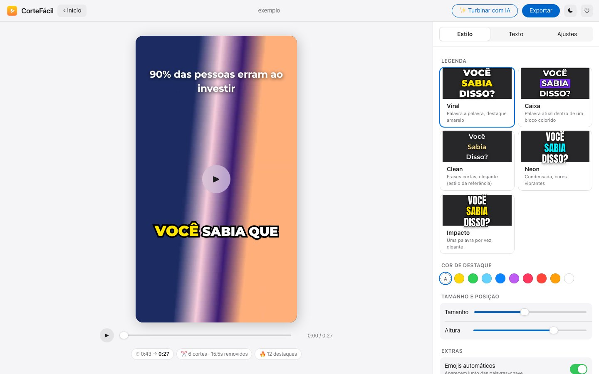
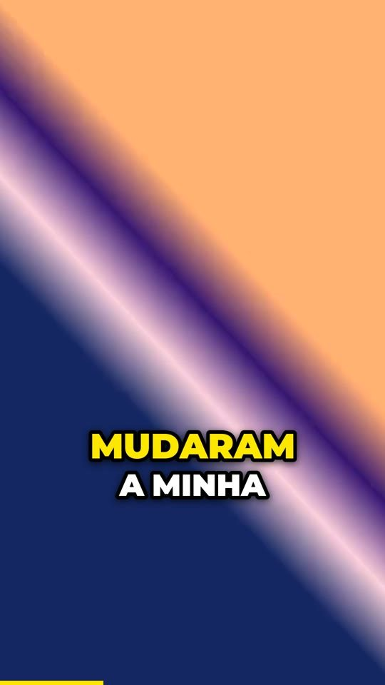
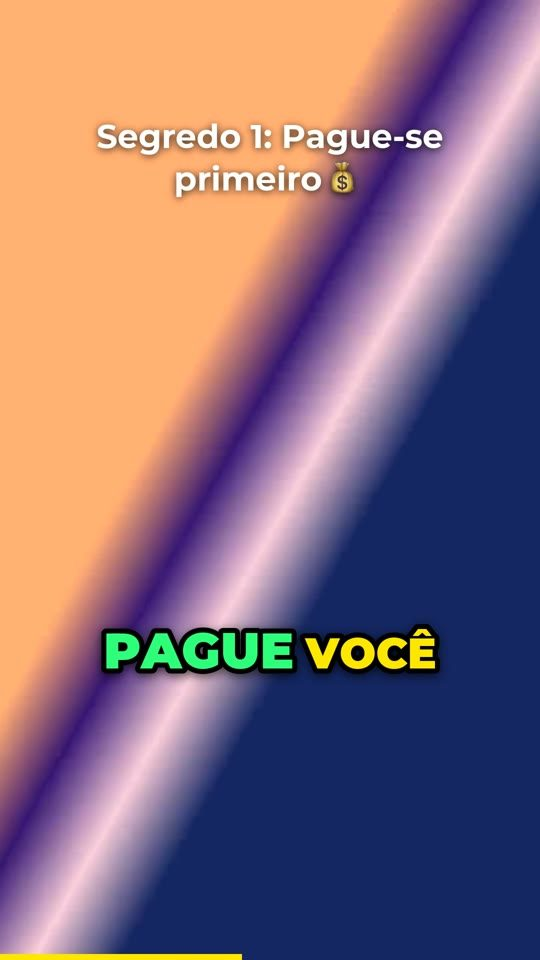
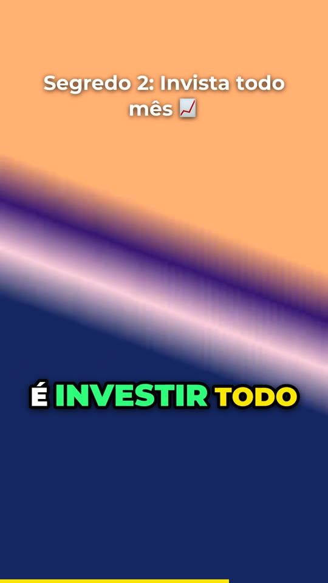

Editor automático para Reels, TikTok e Shorts
Solte a gravação crua. Saia com legendas animadas, silêncios cortados e as palavras certas em destaque.

Como funciona
O CorteFácil ouve o seu vídeo, corta as pausas e os “éé”, escreve as legendas e dá ritmo com zoom. Você só ajusta o que quiser.



E tudo continua editável: cortar uma frase do texto corta o vídeo.
Palavra por palavra, sincronizadas, em 5 estilos prontos: Viral, Caixa, Clean, Neon e Impacto.
Remove pausas, respiros e vícios de linguagem. Escolha o ritmo: suave, normal ou acelerado.
Números e palavras-chave ganham cor e tamanho, com emojis que reforçam a ideia.
Aproxima o enquadramento a cada corte, para o vídeo nunca parecer parado.
Um gancho forte na abertura e títulos no topo a cada novo assunto.
Volume no padrão das redes e música de fundo que abaixa sozinha quando você fala.
Turbinar com IA
Se você usa Claude Code ou Codex, o CorteFácil conversa com ele, com a sua conta e sem chave de API, e edita como um profissional.
Opcional. Sem assistente, todo o resto funciona normalmente.
Grátis · Código aberto
Um comando, e pronto. Sem cadastro, sem senha de administrador.
Instale o CorteFácil de https://github.com/danilocaffaro/cortefacil seguindo o AGENTS.md do repositório e abra o app para mim.Não. Tudo roda no seu computador. A única exceção é o “Turbinar com IA”, que envia apenas o texto da transcrição para o Claude Code ou o Codex que você já usa.
Sim, e com código aberto (licença MIT). O “Turbinar com IA” usa a sua assinatura do Claude Code ou do Codex, se você tiver uma.
Funciona em Macs com chip Apple, onde é mais rápido, e em computadores Windows ou Linux atuais. Na primeira vez ele baixa a IA de transcrição, com 0,5 a 1,6 GB.
O foco é o português do Brasil: legendas, destaques e emojis são ajustados para PT-BR.
Para atualizar, rode o mesmo comando de instalação; seus projetos são mantidos. Para desinstalar, apague a pasta “CorteFacil” da sua pasta de usuário e o ícone do CorteFácil.
Abra uma issue no GitHub e anexe o arquivo CorteFacil/logs/servidor.log.